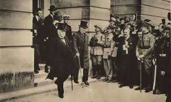
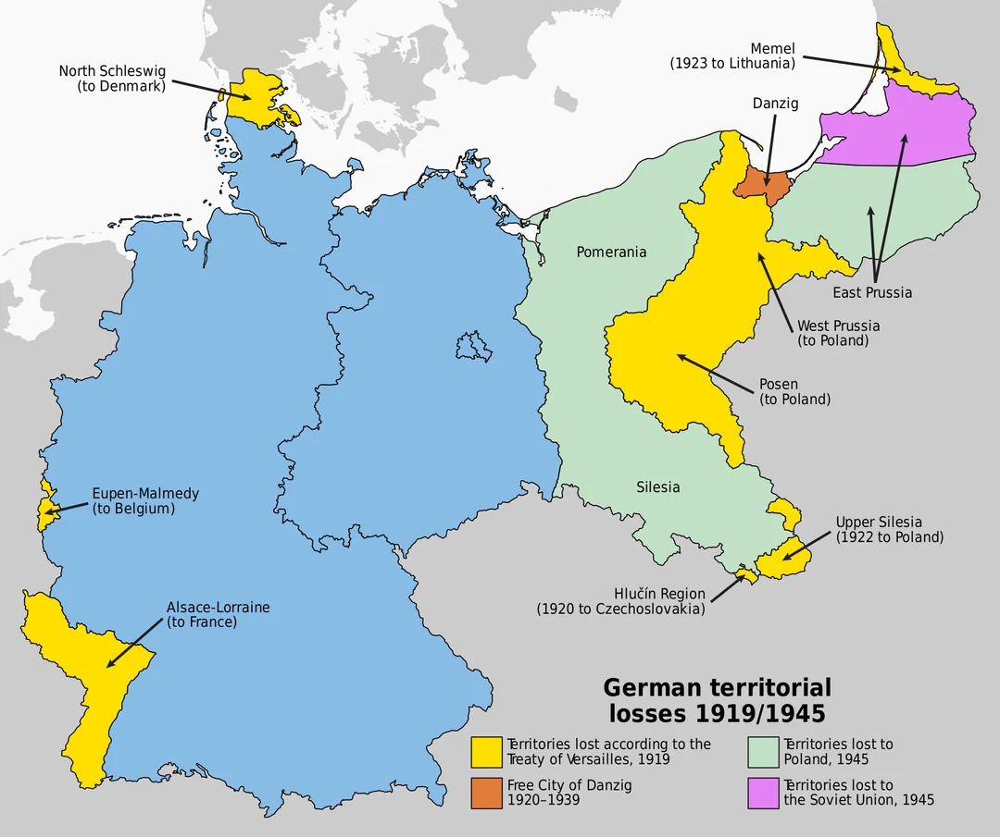

Was the Treaty of Versailles fair? IGCSE Notes

- The Treaty of Versailles was signed on 28 June 1919.
- Germans mostly viewed the treaty as being too harsh and severe, while the Allies (Clemenceau and Lloyd George) saw it as being fair and deserved, considering Germany’s heinous actions during WW1.
Terms of the Treaty of Versailles:
Germany’s military reduction
- Germany was only allowed to have 100,000 troops and conscription was forbidden.
- Germany was also not allowed to have an air force, submarines, but the German navy was allowed to keep 6 battleships and 15,000 sailors only.
- The Rhineland (Border between France and Germany) was also forced to be demilitarised.
- As a result, Germany grew angry, because Germans saw their military as a source of pride and nationalism, and it was being taken away from them.
War Guilt Clause
- Germany had to acknowledge Article 231 of the Treaty of Versailles, where Germany had to accept the war guilt clause of starting World War I in the first place.
- Germans felt infuriated and thought that it was unfair they had to accept the entire blame.
Reparations
- Germany was forced to pay 6,600 million pounds (132 billion marks) to the allies as reparations for the damages inflicted by Germany on countries.
- Germans felt the reparations were too harsh and they couldn’t afford it, due to their collapsing economy, damaged infrastructure, and military debts from the Great War.
Germany’s territories and colonies

Caption: Credits to PatientBuilder499 on r/MapPorn for the image above
- Germany’s colonies in Africa and Asia were seized by the allies, as part of the terms of the Treaty of Versailles.
- Germany’s African colonies were held under Britain’s and France’s control, where colonies became mandates of the newly-established League of Nations.
- Germany’s colonies in Asia were mainly given to Japan for their contribution to the war against the Central Powers.
- Germany’s territories (eg: Polish Corridor, Upper Silesia, Alsace Lorraine) were given to France, newly formed nations of Poland and Czechoslovakia, and other more.
League of Nations
- The League of Nation was formed to promote international cooperation and preserve peace around the world, preventing any future wars.
- Germany was not allowed to join until it could show that it was a peace-loving country.
The Big Three

Caption: Credits to Mr Allsop History for the image above
- The Big Three were:
- Lloyd George (Leader of Britain)
- Clemenceau (Leader of France)
- Woodrow Wilson (Leader of the USA)
Wilson’s Ideas:
- Wanted to promote international cooperation among countries around the world.
- Wanted to set up the League of Nations to prevent future aggression and ensure countries would work together.
- Wilson promoted his Fourteen Points, which fully supported lasting peace and a fairer treaty for Germany, compared to the reality.
The Fourteen Points included:
- Self-determination for people in Eastern European countries
- No secret treaties
- Free trade between countries
- Disarmament
- Colonies to have a say in their own future
- Creation of the League of Nations
- Free access to the sea
- German troops to leave Russia
- German troops to leave Belgium
- France to regain Alsace-Lorraine
- Serbia to gain access to the sea
- Self-determination for people in the Ottoman Empire
- Poland to become an independent nation again
- The borders between Austria and Italy to be adjusted
Clemenceau’s Ideas:
- Wanted Germany to be punished harshly in terms of the Treaty of Versailles.
- This is because Clemenceau wanted Germany to pay for the damages it had caused to France (France was invaded by Germany, and most of the fighting in the Western Front took place in France).
- Clemenceau proposed to impose a larger amount of reparations for Germany to compensate the Allies.
- Clemenceau wanted the Rhineland to be demilitarised, to act as a barrier between Germany and France, and to prevent any future potential invasions from Germany.
- Clemenceau also demanded that Germany’s territories be reduced and split into smaller territories, so that Germany would not be able to reunify to invade its neighbours (primarily France), although this idea would be scrapped by him, because he knew Lloyd George and Wilson would not agree to it.
- He also wanted to disarm Germany’s military, so that they would no longer have the power to invade France in the future.
Lloyd George’s Ideas:
- Wanted to punish Germany harshly to satisfy the British public, as the British people were fed with anti-German propaganda, and had wanted Germany to be punished severely.
- However, Lloyd George did not want Germany to be also treated harshly, because he did not want to lose Britain’s largest trading partner(Germany).
- It would only cause rising unemployment and a collapse in Britain’s economy.
- Lloyd George mainly focused on Wilson’s Fourteen Points that were affecting or involved Britain’s colonial ambitions and its navy.
Agreements and Disagreements between Clemenceau, Wilson, and Lloyd George
Clemenceau and Wilson
- Clemenceau wanted Germany to be punished harshly in the treaty, while Wilson seemed to be more sympathetic and less merciless to Germany.
- This is because the US had only joined the war in 1917 and had not received as much damage as France had received.
- When Clemenceau demanded that the Rhineland should gain independence, so that it could act as a barrier between France and Germany for security.
- However, Wilson did not agree because he believed in self-determination, and it felt wrong to seize the Rhineland from German territory.
- Clemenceau also demanded that Germany should pay a higher reparations amount than the original amount.
- But, Wilson did not agree, fearing that it would only result in a collapse of the German economy and it would ignite a communist revolution - something both Wilson and Lloyd George feared.
- Both Clemenceau and Wilson had arguments over with the coalfields in the Saar region in Germany.
- Clemenceau wanted to seize the Saar region, as a way of compensation for the damages Germany caused during the war.
- However, Wilson disagreed, over the fact that it was against his idea of self-determination.
Lloyd George and Wilson
- Lloyd George was primarily unavailable with few of Wilson’s Fourteen Points, which were allowing nations to have access to the sea.
- Lloyd George see this as a threat to the dominant British Empire, as he wanted the British navy to rule the sea, and did not want Germany or any other nations to compete with Britain.
- Lloyd George had also desired for a heavy disarmament, seeing Germany’s military and navy as a threat to Britain’s naval and military power.
Clemenceau and Lloyd George
- Clemenceau felt it was selfish for Lloyd George to treat Germany fairly, as he wanted Germany to trade with Britain again.
- Meanwhile, Lloyd George wanted to disarm Germany as much as possible, since Germany’s navy was a threat to the British empire.
Consequences of the Treaty of Versailles for Germany
Occupation of the Ruhr and Hyperinflation
- The reparations hit a huge toll on Germany’s economy - Germany couldn’t afford to pay for the reparations.
- As a result, when Germany stopped paying in 1922, French and Belgian troops entered the Ruhr region and seized coal and other raw materials as payment for the treaty. The Ruhr was occupied by the allies.
- The German government tried to order the workers to go on strike against the occupation by not working for the French to take resources.
- Consequently, France retaliated by killing over 100 workers.
- With no money left, it eventually caused hyperinflation in Germany, because the German government printed more money to fix the issue of not having enough money.
Political Instability and Violence
- Due to the unfair military and reparations terms, it brought the rise of right-wing groups, attempting to overthrow the Weimar government (led by Ebert).
- An uprising (Spartacist Uprising) was led by the Communist Party of Germany, trying to overthrow the German government and replace it with a communist government. However, it failed, with the help of the Freikorps.
- Another uprising (Kapp Putsch), which was led by the Freikorps, was held in an attempt to overthrow the government. It failed due to the disruption of transport by Berlin workers.
- In 1923, Hitler attempted to launch a coup in Bavaria, often known as the Beer Hall Putsch, in an attempt to take control of the Bavarian government and march all the way to Berlin. It eventually failed, and Hitler was arrested, although Hitler received a soft sentence in prison for 9 months.
Treaty of Versailles: Fair or Unfair?
Arguments and Perspectives
- Most German citizens saw the treaty as unfair, regarding how Germany shouldn’t have gotten the full blame for the war (Article 231 War Guilt Clause), and how gruesome the allies had been with punishing Germany with a harsh reparations, knowing that Germany couldn’t pay for it.
- On the other hand, the allies saw the treaty as being less harsh, viewing Germany had not suffer during the war, and was actually more powerful than it was in 1914.
- This was because neighbouring empires collapsed after WW1, and many new, weak countries were formed, allowing Germany to seize this as an opportunity to take over new countries (power vacuum).
- The allies also thought that Germany just didn’t want to pay for the reparations and wanted to cause a crisis, in order for the allies to consider revising the reparation terms of the treaty.
- Moreover, Germany’s economic issues were Germany’s fault, as the government had actually intentionally piled up the military debts accummulated during the war, so that Germany could pay for it after they had won the war using resources and rewards from allied countries.
← Back to Paper 1